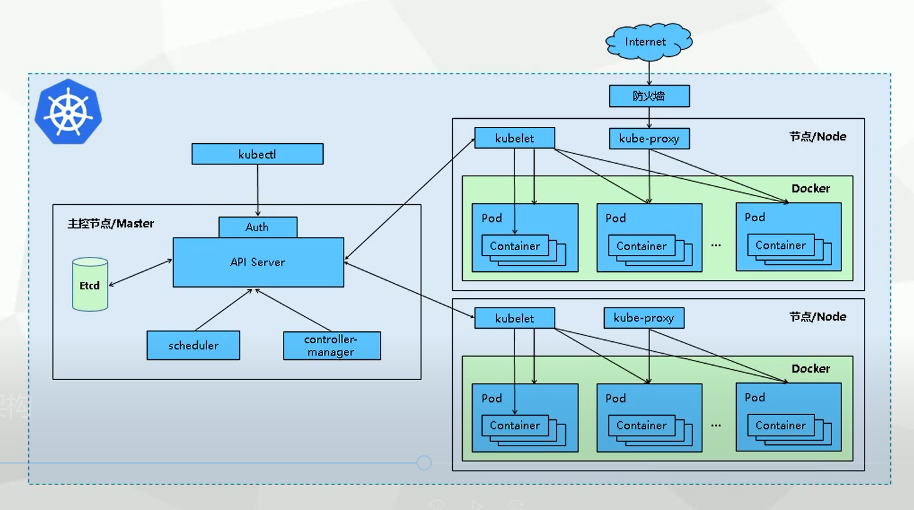

k8s 部署¶
kubernetes 介绍¶
kubernetes 是 Google 开源的容器集群管理系统，可以自动部署、扩展和管理容器化的应用。它可以自动分配资源，调度容器，并且管理应用的生命周期。
k8s 架构¶
k8s 集群由 master 和 node 组成，master 负责管理集群，node 负责运行容器。

在这个图中：
- 工作节点 (Worker Node): 运行容器应用的机器，可以是物理机、虚拟机、云服务器等。
- 主节点 (Master Node): 负责管理整个集群系统，调度工作节点，也称为 master 或 API server。
- Pod: Kubernetes 中最小的部署单元，容器都运行在 Pod 中。
- ReplicaSet: 确保集群中运行指定数量的 Pod 副本。
- Deployment: 用于管理 Pod 的副本集合，并提供滚动更新和回滚等功能。
- Service: 定义了访问一组特定 Pod 的方式。
- Namespace: 用于隔离集群中的资源，比如不同的项目、不同的环境等。
- Label: 用于标识 Pod 和 Service 的键值对，用于关联对方。
- Volume: 提供持久化存储。
- Horizontal Pod Autoscaler (HPA): 自动调整 Deployment 中的 Pod 数量。
- ConfigMap: 存储非加密配置信息。
- Secret: 存储加密信息，如密码、密钥等。
- Ingress: 提供外网访问集群服务的方式。
这个架构图解提供了Kubernetes的主要组件和功能概览，帮助开发者和运维人员理解Kubernetes的工作原理和使用方法。
安装 k8s¶
k8s 可以在多种环境下安装，包括物理机、虚拟机、云服务器等。
前提条件¶
- 机器配置：至少 2 台机器，1 台 master 节点，至少 2 台 worker 节点。
- 操作系统：CentOS 7.x 和 ubuntu 20.04 或更高版本。
- 网络：集群内所有机器之间网络互通。
- 时间：所有机器的时间同步。
- 软件：
- Docker：18.03 或更高版本。
- Kubernetes：1.20 或更高版本。
- kubectl：1.20 或更高版本。
- kubelet：1.20 或更高版本。
- kubeadm：1.20 或更高版本。
- Helm：3.5 或更高版本。
- 其他工具：如 socat、conntrack、ebtables、ipset、ipvsadm、conntrack、nfs-utils 等。
k8s 可以通过多种方式安装，这里介绍最常用的几种方式：
- minikube：在本地运行 k8s，适合学习、测试使用。
- kubeadm：在物理机或云服务器上安装 k8s，适合生产环境。
- k3s：轻量级 Kubernetes 发行版，适合边缘计算场景。
- kind：在本地运行 k8s，适合学习、测试使用。
- kops：在云服务器上安装 k8s，适合生产环境。
- arktos：在物理机或云服务器上安装 k8s，适合生产环境。
- rancher：基于 k8s 的容器编排和管理平台，提供图形化界面，支持多种部署方式，适合生产环境。
配置 k8s¶
k8s 的配置包括 master 和 node 两部分。
master 配置¶
master 主要配置包括：
- API Server：集群统一入口，各组件的协调者，提供认证、授权、访问控制、API注册和发现等机制，以 RESTful API 的方式提供接口服务，所有对象资源的增删改查和监听都由 API Server 处理后提交给 Etcd 存储。所有模块之前并不会之间互相调用，而是通过和 API Server 打交道来完成自己那部分的工作。
- Scheduler：负责对集群内部的资源进行调度，相当于调度员的角色，按照预定的调度策略将 Pod 调度到相应的机器上，调度程序根据调度算法为新创建的 Pod 选择一个 Node 节点，可以任意部署，可以部署在同一个节点上，也可以部署在不同的节点上。
- Controller Manager：Controller Manager 是 K8s 的管理控制中心，控制器和资源一一对应，负责集群内 Node、Namespace、Service、Token、Replication 等资源对象的管理，使集群内的资源对象维持在预期的工作状态。每一个 controller 通过 api-server 提供的 restful 接口实时监控集群内每个资源对象的状态，当发生故障，导致资源对象的工作状态发生变化，就进行干预，尝试将资源对象从当前状态恢复为预期的工作状态，常见的 controller 有 Namespace Controller、Node Controller、Service Controller、ServiceAccount Controller、Token Controller、ResourceQuote Controller、Replication Controller等。
- etcd：分布式键值存储系统集群，用于保存集群状态数据，如：Pod、Service 等资源对象信息。 另外，Etcd 有一个特性，可以调用它的 API 监听其中的数据，一旦数据发生变化，就会收到通知。有了这个特性之后，K8s 中的每个组件只需要监听 Etcd 中数据，就可以知道自己应该做什么。
- kubectl： 通过 Kubernetes API 与 Kubernetes 集群的控制面进行通信的命令行工具。
node 配置¶
node 主要配置包括：
- kubelet：负责运行容器，并向 master 注册节点信息。通过 API Server 提供的接口监测到 Scheduler 产生的 Pod 绑定事件，然后从 Etcd 获取 Pod 清单，下载镜像并启动容器。同时监视分配给该 节点的 Pods，周期性获取容器状态，再通过 API Server 通知各个组件。
- kube-proxy：网络代理程序，在 Node 节点上实现 Pod 网络代理，负责为 Service 提供 Cluster 内部的服务发现、网络规划和负载均衡。
- Pod：K8s 最小的操作单元。一个 Pod 代表着集群中运行的一个进程，它内部封装了一个或多个紧密相关的容器。
- Container Runtime：负责运行容器，镜像运行后的实例；目前支持的容器运行时有 Docker、Podman、Containerd 等。
部署应用¶
k8s 部署应用主要有三种方式：
- kubectl 命令行：通过命令行操作 k8s 集群。
- YAML 文件：通过 YAML 文件定义应用，然后通过 kubectl 命令行创建应用。
- Helm：通过 Helm Charts 定义应用，然后通过 Helm 命令行安装应用。
网络配置kube-proxy 与 EndpointSlices 功能介绍¶
k8s 集群中存在着多个节点，每个节点上都有多个容器，当容器之间需要通信时，kube-proxy 会根据 Service 的配置，通过 iptables 规则实现流量转发。但是，在 k8s 集群中，Service 的 IP 地址并不是固定的，而是由 k8s 自动分配的，因此，kube-proxy 无法区分不同 Service 之间的流量。
为了解决这个问题，k8s 提供了一种机制，即 EndpointSlices，它可以让 Service 的 IP 地址固定下来，并通过 EndpointSlices 资源记录 Service 的网络信息，这样就可以让 kube-proxy 进行流量转发。
查看服务器的iptables规则¶
如果看到如下输出，说明iptables规则中没有KUBE-SERVICES规则：
解决方案：
- 升级k8s到1.21或以上版本。
- 开启kube-proxy的ipvs模式：
- 重启kube-proxy：
- 验证kube-proxy的ipvs模式：
如果看到如下输出，说明kube-proxy的ipvs模式开启成功：
查看服务器的ipvs规则¶
如果看到如下输出，说明ipvs规则中没有KUBE-SVC规则：
IP Virtual Server version 1.2.1 (size=4096)
Prot LocalAddress:Port Scheduler Flags
-> RemoteAddress:Port Forward Weight ActiveConn InActConn
解决方案：
- 升级k8s到1.21或以上版本。
- 开启kube-proxy的ipvs模式：
- 重启kube-proxy：
- 验证kube-proxy的ipvs模式：
如果看到如下输出，说明kube-proxy的ipvs模式开启成功：
EndpointSlices功能介绍¶
EndpointSlices 是 K8s 1.21 版本引入的新功能，它可以让 Service 的 IP 地址固定下来，并通过 EndpointSlices 资源记录 Service 的网络信息。
EndpointSlices 资源的主要字段如下：
- addresses：Service 的 IP 地址列表。
- ports：Service 的端口列表。
- endpoints：Pod 的 IP 地址列表。
- age：EndpointSlices 资源的创建时间。
- conditions：EndpointSlices 资源的状态信息。
查看服务器的EndpointSlices的iptables规则¶
如果看到如下输出，说明没有EndpointSlices资源：
-A KUBE-SERVICES -m comment --comment "kubernetes service portals" -j KUBE-SVC-NP
-A KUBE-SVC-NP -m comment --comment "kubernetes service nodeports" -j KUBE-SEP-NP
-A KUBE-SEP-NP -m comment --comment "kubernetes service endpoint slice" -j KUBE-SEP-PORT-NP
解决方案：
- 升级k8s到1.21或以上版本。
- 开启EndpointSlices功能：
- 重启kubelet：
- 验证EndpointSlices功能：
如果看到如下输出，说明EndpointSlices功能开启成功：
参考资料¶
- kubernetes 官方文档
- k8s 架构
- k8s 安装
- k8s 部署应用
- k8s 网络
- k8s 存储
- k8s 安全
- k8s 调度
- k8s 监控
- k8s 扩展
- k8s 故障排查
- k8s 参考架构
- k8s 生态系统
- k8s 工具
- k8s 周边工具
- k8s 常见问题
- k8s 版本升级
- k8s 集群管理
- k8s 开发指南
- k8s 贡献指南
- k8s 路线图
- k8s 版本说明
- k8s 常见问题
- k8s 资源配额
- k8s 命名空间
- k8s 标签
- k8s 注解
- k8s 事件
- k8s 日志
- k8s 持久化存储
- k8s 存储类
- k8s 存储卷
- k8s 存储扩容
- k8s 集群联邦
- k8s 集群升级
- k8s 集群缩容
- k8s 集群回滚
- k8s 集群备份与恢复
- k8s 集群迁移
- k8s 集群扩展
后续更多¶
k8s 是一个复杂的系统，本文只是介绍了 k8s 的一些基本概念和安装方法，后续还会介绍 k8s 的各个组件的功能和用法，敬请期待。
k8s + Istio 是一个很好的组合，可以实现微服务架构的部署、服务治理、流量管理、安全防护等。
- istio 介绍
- istio 功能
- k8s + Istio 参考架构：https://istio.io/latest/docs/ops/deployment/architecture/
- k8s + Istio 部署：https://istio.io/latest/docs/setup/getting-started/
- k8s 智能路由：https://istio.io/latest/docs/tasks/traffic-management/ingress/kubernetes-ingress/
- k8s + Traefik 参考架构：https://traefik.io/blog/traefik-2-0-released/
- k8s + Traefik 部署：https://traefik.io/docs/v2.0/getting-started/install-traefik/
- k8s + Prometheus 参考架构：https://prometheus.io/docs/introduction/overview/
- k8s + Prometheus 部署：https://prometheus.io/docs/prometheus/latest/getting_started/
- k8s + Grafana 参考架构：https://grafana.com/docs/grafana/latest/installation/
- k8s + Grafana 部署：https://grafana.com/docs/grafana/latest/installation/docker/
- k8s + Elasticsearch 参考架构：https://www.elastic.co/guide/en/elasticsearch/reference/current/index.html
- k8s + Elasticsearch 部署：https://www.elastic.co/guide/en/elasticsearch/reference/current/docker.html
- k8s + Fluentd 参考架构：https://www.fluentd.org/architecture
- k8s + Fluentd 部署：https://docs.fluentd.org/v1.0/articles/quickstart
- k8s + Kibana 参考架构：https://www.elastic.co/guide/en/kibana/current/index.html
- k8s + Kibana 部署：https://www.elastic.co/guide/en/kibana/current/docker.html
- k8s + NFS 参考架构：https://kubernetes.io/docs/concepts/storage/volumes/#nfs
- k8s + NFS 部署：https://kubernetes.io/docs/tasks/configure-pod-container/configure-persistent-volume-storage/#create-a-persistentvolume
- k8s + Calico 参考架构：https://docs.projectcalico.org/getting-started/kubernetes/requirements
- k8s + Calico 部署：https://docs.projectcalico.org/getting-started/kubernetes/installation/calico
- k8s + Weave Net 参考架构：https://www.weave.works/docs/net/latest/kubernetes/kube-addon/
- k8s + Weave Net 部署：https://www.weave.works/docs/net/latest/kubernetes/kube-addon/
- k8s + Rook 参考架构：https://rook.io/docs/rook/v1.6/ceph-cluster-crd.html
- k8s + Rook 部署：https://rook.io/docs/rook/v1.6/ceph-quickstart.html
- k8s + Kubeflow 参考架构：https://www.kubeflow.org/docs/started/k8s/overview/
- k8s + Kubeflow 部署：https://www.kubeflow.org/docs/started/k8s/kfctl-k8s-istio/
- k8s + Knative 参考架构：https://knative.dev/docs/install/
- k8s + Knative 部署：https://knative.dev/docs/install/knative-with-minikube/
- k8s + Kubespray 参考架构：https://kubespray.io/
- k8s + Kubespray 部署：https://kubespray.io/getting-started/
- k8s + rancher 参考架构：https://rancher.com/docs/rancher/v2.x/en/overview/
- k8s + rancher 部署：https://rancher.com/docs/rancher/v2.x/en/quick-start-guide/deployment/quickstart-manual-setup/
另外，k8s 还有很多其他的功能，比如：
- 集群自动伸缩：通过 HPA（Horizontal Pod Autoscaling）可以根据集群的负载自动扩展 Pod 数量。
- 集群升级：通过滚动升级（Rolling Update）可以逐步升级集群中的节点。
- 集群备份与恢复：通过备份（Backup）可以备份集群中的数据，通过恢复（Restore）可以恢复集群中的数据。
- 集群监控：通过 Prometheus、Grafana 可以监控集群的资源使用情况。
- 集群日志：通过 Elasticsearch、Fluentd、Kibana 可以收集、分析、存储集群中的日志。
- 集群网络：通过 Flannel、Calico、Weave Net 可以实现集群的网络拓扑。
- 集群存储：通过 PersistentVolume、PersistentVolumeClaim 可以实现集群的持久化存储。
- 集群安全：通过 RBAC（Role-Based Access Control）可以实现集群的权限管理。
- 集群扩展：通过 CRD（Custom Resource Definition）可以扩展集群的功能。
- 集群迁移：通过 kubectl 命令行可以实现集群的迁移。
- 集群扩展：通过 Helm Charts 可以扩展集群的功能。
- 集群联邦：通过 Federation 可以实现多个集群的联合管理。
- 集群扩展：通过 Operator 可以扩展集群的功能。
- 集群扩展：通过 API Aggregation 可以扩展集群的功能。
- 集群扩展：通过 Custom Controller 可以扩展集群的功能。
- 集群扩展：通过 Device Plugin 可以扩展集群的功能。
- 集群扩展：通过 Custom Scheduler 可以扩展集群的功能。
- 集群扩展：通过 Custom Admission Webhook 可以扩展集群的功能。
- 集群扩展：通过 Custom Metrics Server 可以扩展集群的功能。
- 集群扩展：通过 Custom DNS 可以扩展集群的功能。
- 集群扩展：通过 Custom Metrics API 可以扩展集群的功能。
- 集群扩展：通过 Custom Resource Validation 可以扩展集群的功能。
- 集群扩展：通过 Custom Resource Subresources 可以扩展集群的功能。
- 集群扩展：通过 Custom Resource Versioning 可以扩展集群的功能。
- 集群扩展：通过 Custom Resource Publishing Pipeline 可以扩展集群的功能。
- 集群扩展：通过 Custom Resource Conversion 可以扩展集群的功能。
- 集群扩展：通过 Custom Resource Defaulting 可以扩展集群的功能。
- 集群扩展：通过 Custom Resource Status Subresource 可以扩展集群的功能。
- 集群扩展：通过 Custom Resource Finalizers 可以扩展集群的功能。
- 集群扩展：通过 Custom Resource Publishing/Consumption Pipeline 可以扩展集群的功能。
- 集群扩展：通过 Custom Resource Validation Webhook 可以扩展集群的功能。
- 集群扩展：通过 Custom Resource Subresource Scale 可以扩展集群的功能。
- 集群扩展：通过 Custom Resource Versioning Schema 可以扩展集群的功能。
- 集群扩展：通过 Custom Resource Validation Schema 可以扩展集群的功能。
- 集群扩展：通过 Custom Resource Subresource Status 可以扩展集群的功能。
持续更新中，希望本文对你有所帮助，如果有任何问题，欢迎随时联系我。